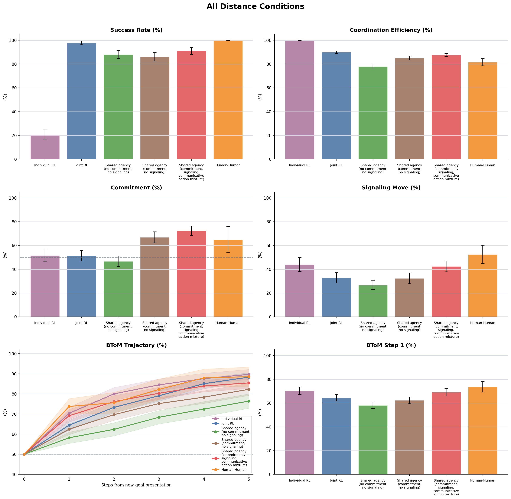
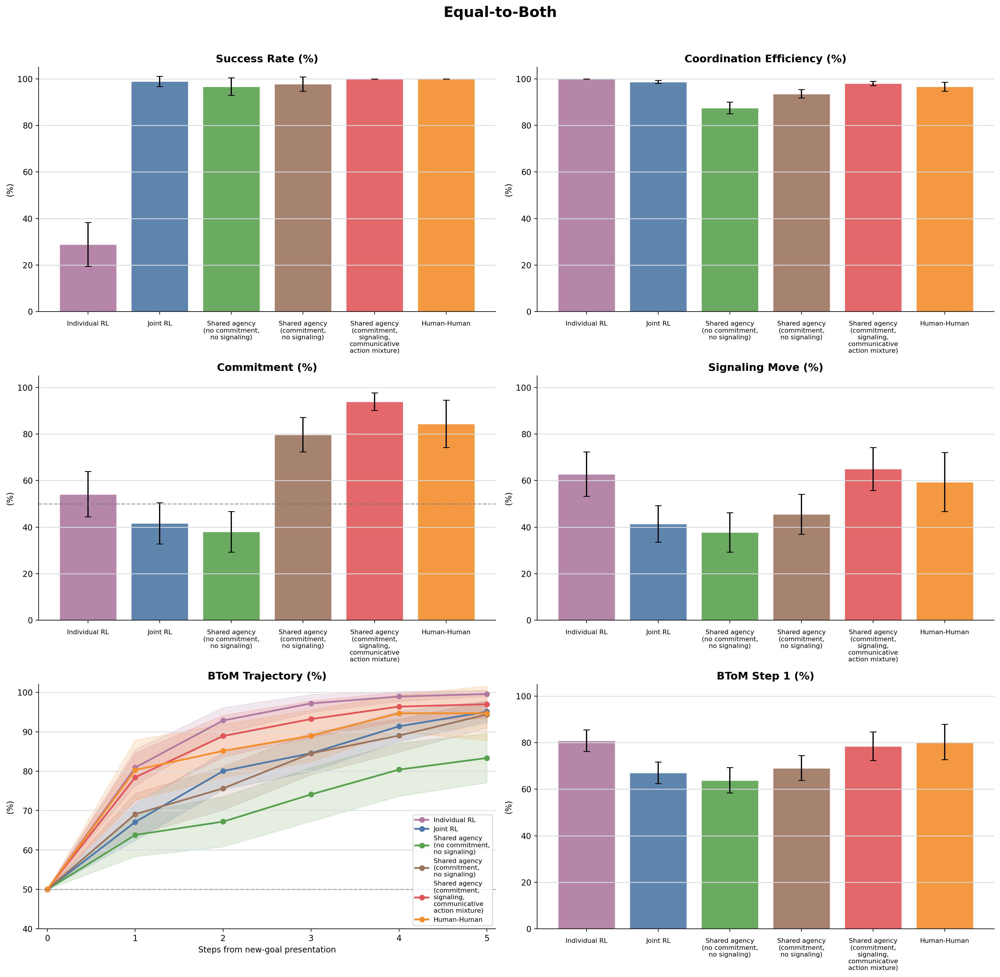
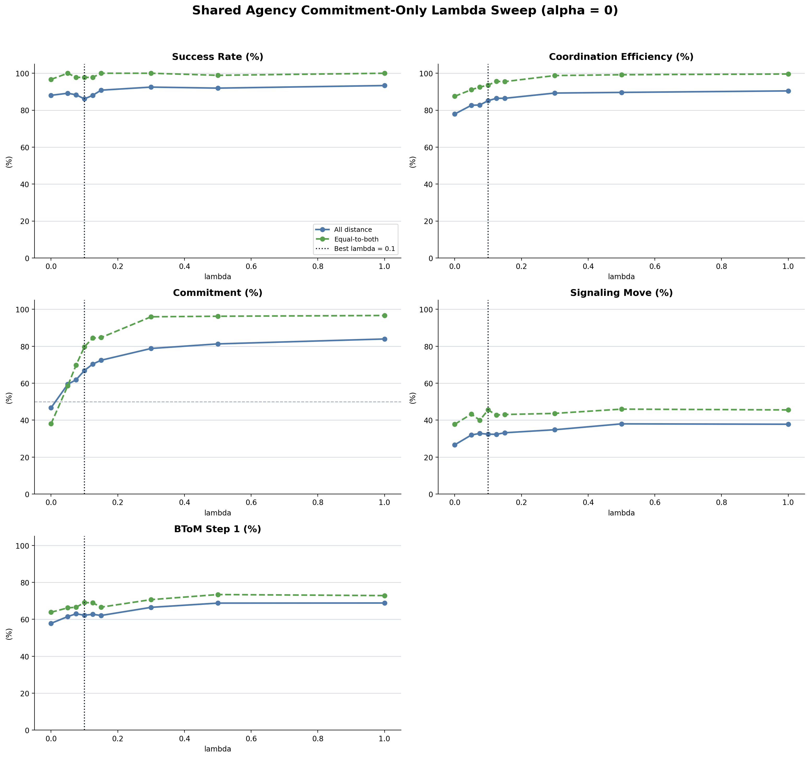
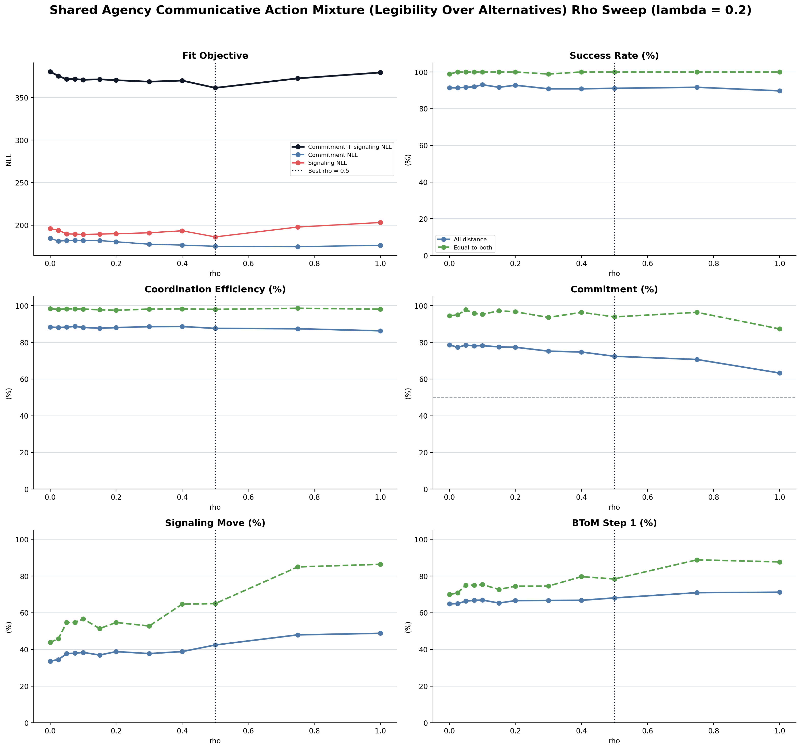
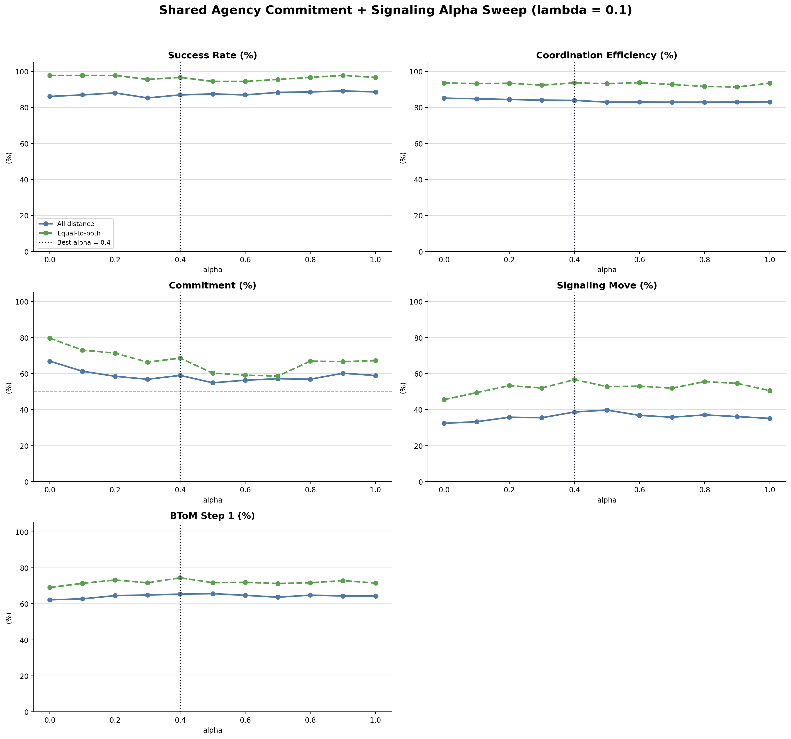
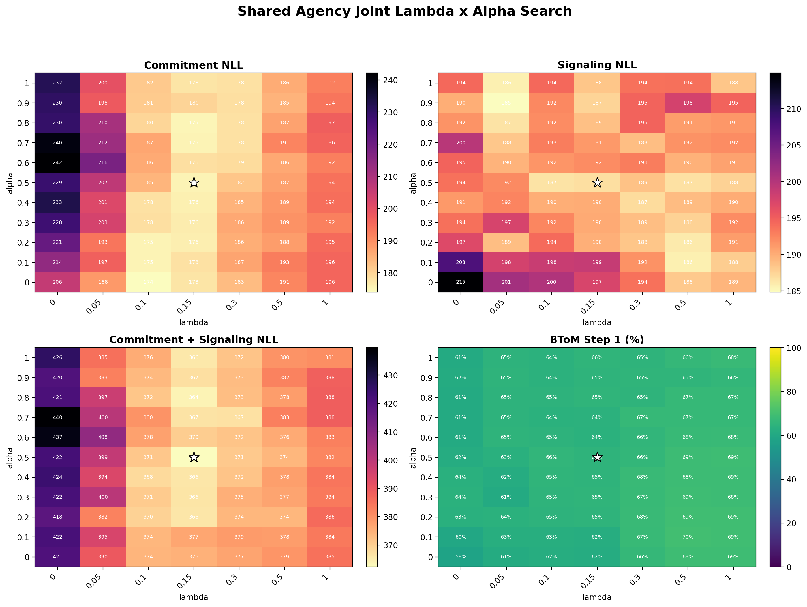
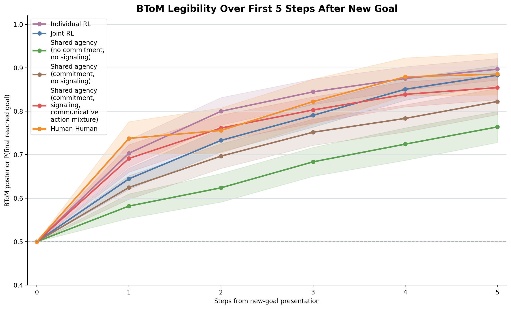

Model Definitions
Individual RL: no partner-position input; each player uses the existing IndividualRL policy over current goals with goal feature reward +30, step cost -1 per own action step, gamma 0.9, transition noise 0, softmax beta 3, and argmax action selection with random tie-breaking.
Joint RL: no inferred goal, no posterior, no lambda, no alpha; actions are sampled from the unshaped JointRL marginal policy over all current goals.
Shared agency no commitment no signaling: samples a latent goal from unshaped value weights, then acts through the same unshaped JointRL base policy for that sampled goal. With lambda=0 and rho=0, posterior and signaling mixture terms are disabled.
Shared agency commitment no signaling: fixes the signaling parameter at 0, sweeps lambda, and uses the best lambda selected by commitment-only binomial NLL.
Shared agency commitment signaling (Communicative Action Mixture (Legibility Over Alternatives)): fixes lambda=0.2 and uses the rho selected by commitment + signaling binomial NLL. The signaling policy mixes the base JointRL policy with a communicative policy that increases sampled-goal legibility over alternatives.
All Distance Conditions

Equal-to-Both

Commitment-Only Lambda Sweep
The commitment/no-signaling shared-agency row fixes alpha=0 and selects lambda by commitment-only binomial NLL. The sweep plot shows the five report metrics as lambda changes.

Best Lambda
| lambda | commitment_nll | signaling_nll | binomial_nll | average_commitment_percent | average_signaling_percent | equal_commitment_percent | equal_signaling_percent |
|---|---|---|---|---|---|---|---|
| 0.10 | 173.95 | 200.25 | 374.20 | 66.88 | 32.42 | 79.72 | 45.56 |
Full Shared-Agency Communicative Action Mixture (Legibility Over Alternatives) Rho Sweep
The full shared-agency row in the main comparison uses this Communicative Action Mixture (Legibility Over Alternatives) fit. Lambda is fixed at 0.2 and rho is selected by commitment NLL + signaling NLL across the human distance-condition targets.

Best Communicative Action Mixture (Legibility Over Alternatives) Setting
| lambda | rho | commitment_nll | signaling_nll | binomial_nll | average_commitment_percent | average_signaling_percent | equal_commitment_percent | equal_signaling_percent |
|---|---|---|---|---|---|---|---|---|
| 0.20 | 0.50 | 175.19 | 186.21 | 361.40 | 72.42 | 42.44 | 93.89 | 65.00 |
Legacy RSA Diagnostics
These alpha and lambda x alpha searches are retained for comparison only. They are no longer used as the full shared-agency row in this report.
Legacy RSA Alpha Sweep

Best Legacy RSA Alpha
| lambda | commitment_nll | signaling_nll | binomial_nll | average_commitment_percent | average_signaling_percent | equal_commitment_percent | equal_signaling_percent |
|---|---|---|---|---|---|---|---|
| 0.10 | 178.20 | 189.90 | 368.10 | 59.02 | 38.69 | 68.61 | 56.67 |
Legacy RSA Joint Lambda x Alpha Search

Best Legacy RSA Joint Pair
| lambda | commitment_nll | signaling_nll | binomial_nll | average_commitment_percent | average_signaling_percent | equal_commitment_percent | equal_signaling_percent |
|---|---|---|---|---|---|---|---|
| 0.15 | 175.50 | 186.80 | 362.29 | 67.68 | 39.96 | 77.78 | 51.39 |
BToM Legibility
BToM posterior is computed over the old shared goal versus the new goal from each post-new-goal trajectory, scored as the posterior probability of the player's final reached goal. Step 0 is the new-goal presentation moment.

BToM summary CSV BToM step 1 CSV BToM step CSV BToM mean CSV
Summary Table
| condition_scope | group | Success Rate (%) | Coordination Efficiency (%) | Commitment (%) | Signaling Move (%) | BToM Step 1 (%) |
|---|---|---|---|---|---|---|
| average | Individual RL | 20.56 | 100.00 | 51.64 | 43.98 | 70.35 |
| average | Joint RL | 97.78 | 89.96 | 51.42 | 32.85 | 64.45 |
| average | Shared agency no commitment no signaling | 88.06 | 77.93 | 46.71 | 26.65 | 58.17 |
| average | Shared agency commitment no signaling | 86.11 | 85.15 | 66.88 | 32.42 | 62.47 |
| average | Shared agency commitment signaling (Communicative Action Mixture (Legibility Over Alternatives)) | 91.11 | 87.64 | 72.42 | 42.44 | 69.14 |
| average | Human-Human | 100.00 | 81.58 | 64.97 | 52.53 | 73.75 |
| equal_to_both | Individual RL | 28.89 | 100.00 | 54.17 | 62.80 | 80.90 |
| equal_to_both | Joint RL | 98.89 | 98.66 | 41.67 | 41.39 | 67.09 |
| equal_to_both | Shared agency no commitment no signaling | 96.67 | 87.53 | 38.06 | 37.78 | 63.82 |
| equal_to_both | Shared agency commitment no signaling | 97.78 | 93.59 | 79.72 | 45.56 | 69.07 |
| equal_to_both | Shared agency commitment signaling (Communicative Action Mixture (Legibility Over Alternatives)) | 100.00 | 98.01 | 93.89 | 65.00 | 78.43 |
| equal_to_both | Human-Human | 100.00 | 96.64 | 84.38 | 59.38 | 80.28 |
Raw Sources
| label | raw_trials | summary_path | trials_path |
|---|---|---|---|
| Individual RL | /Users/chengshaozhe/Documents/DukeECClab/code/multiplePlayerGridGame_socketIO/dataAnalysis/raw_data/model_model_simulations/joint_rl/no_latent_joint_rl_shared_agency_baseline/individual_rl_legacy/joint_rl_vs_joint_rl_2p3g_raw_trials_individual_sessions_0_to_29.json.zst | /Users/chengshaozhe/Documents/DukeECClab/code/multiplePlayerGridGame_socketIO/dataAnalysis/model_model/joint_rl/outputs/no_latent_joint_rl_shared_agency_baseline/simulations/individual_rl_legacy/joint_rl_vs_joint_rl_2p3g_summary_individual_sessions_0_to_29.json | /Users/chengshaozhe/Documents/DukeECClab/code/multiplePlayerGridGame_socketIO/dataAnalysis/model_model/joint_rl/outputs/no_latent_joint_rl_shared_agency_baseline/simulations/individual_rl_legacy/joint_rl_vs_joint_rl_2p3g_trials_individual_sessions_0_to_29.json |
| Joint RL | /Users/chengshaozhe/Documents/DukeECClab/code/multiplePlayerGridGame_socketIO/dataAnalysis/raw_data/model_model_simulations/joint_rl/no_latent_joint_rl_shared_agency_baseline/no_latent_joint_rl/joint_rl_vs_joint_rl_2p3g_raw_trials_unshaped_sessions_0_to_29.json.zst | /Users/chengshaozhe/Documents/DukeECClab/code/multiplePlayerGridGame_socketIO/dataAnalysis/model_model/joint_rl/outputs/no_latent_joint_rl_shared_agency_baseline/simulations/no_latent_joint_rl/joint_rl_vs_joint_rl_2p3g_summary_unshaped_sessions_0_to_29.json | /Users/chengshaozhe/Documents/DukeECClab/code/multiplePlayerGridGame_socketIO/dataAnalysis/model_model/joint_rl/outputs/no_latent_joint_rl_shared_agency_baseline/simulations/no_latent_joint_rl/joint_rl_vs_joint_rl_2p3g_trials_unshaped_sessions_0_to_29.json |
| Shared agency no commitment no signaling | /Users/chengshaozhe/Documents/DukeECClab/code/multiplePlayerGridGame_socketIO/dataAnalysis/raw_data/model_model_simulations/joint_rl/no_latent_joint_rl_shared_agency_baseline/shared_agency_lambda0_alpha0/always_signal_vs_always_signal_2p3g_raw_trials_beta_3_lambda_0_alpha_0_sessions_0_to_29.json.zst | /Users/chengshaozhe/Documents/DukeECClab/code/multiplePlayerGridGame_socketIO/dataAnalysis/model_model/joint_rl/outputs/no_latent_joint_rl_shared_agency_baseline/simulations/shared_agency_lambda0_alpha0/always_signal_vs_always_signal_2p3g_summary_beta_3_lambda_0_alpha_0_sessions_0_to_29.json | /Users/chengshaozhe/Documents/DukeECClab/code/multiplePlayerGridGame_socketIO/dataAnalysis/model_model/joint_rl/outputs/no_latent_joint_rl_shared_agency_baseline/simulations/shared_agency_lambda0_alpha0/always_signal_vs_always_signal_2p3g_trials_beta_3_lambda_0_alpha_0_sessions_0_to_29.json |
| Shared agency commitment no signaling | /Users/chengshaozhe/Documents/DukeECClab/code/multiplePlayerGridGame_socketIO/dataAnalysis/raw_data/model_model_simulations/joint_rl/no_latent_joint_rl_shared_agency_baseline/shared_agency_commitment_no_signaling_lambda_sweep/always_signal_vs_always_signal_2p3g_raw_trials_beta_3_lambda_0p1_alpha_0_sessions_0_to_29.json.zst | /Users/chengshaozhe/Documents/DukeECClab/code/multiplePlayerGridGame_socketIO/dataAnalysis/model_model/joint_rl/outputs/no_latent_joint_rl_shared_agency_baseline/simulations/shared_agency_commitment_no_signaling_lambda_sweep/always_signal_vs_always_signal_2p3g_summary_beta_3_lambda_0p1_alpha_0_sessions_0_to_29.json | /Users/chengshaozhe/Documents/DukeECClab/code/multiplePlayerGridGame_socketIO/dataAnalysis/model_model/joint_rl/outputs/no_latent_joint_rl_shared_agency_baseline/simulations/shared_agency_commitment_no_signaling_lambda_sweep/always_signal_vs_always_signal_2p3g_trials_beta_3_lambda_0p1_alpha_0_sessions_0_to_29.json |
| Shared agency commitment signaling (Communicative Action Mixture (Legibility Over Alternatives)) | /Users/chengshaozhe/Documents/DukeECClab/code/multiplePlayerGridGame_socketIO/dataAnalysis/raw_data/model_model_simulations/joint_rl/shared_agency_costly_mixture_rho_sweep/costly_mixture_rho_sweep/always_signal_vs_always_signal_2p3g_raw_trials_beta_3_lambda_0p2_alpha_0p5_score_costly_mixture_sessions_0_to_29.json.zst | /Users/chengshaozhe/Documents/DukeECClab/code/multiplePlayerGridGame_socketIO/dataAnalysis/model_model/shared_agency_costly_mixture_rho_sweep/simulations/costly_mixture_rho_sweep/always_signal_vs_always_signal_2p3g_summary_beta_3_lambda_0p2_alpha_0p5_score_costly_mixture_sessions_0_to_29.json | /Users/chengshaozhe/Documents/DukeECClab/code/multiplePlayerGridGame_socketIO/dataAnalysis/model_model/shared_agency_costly_mixture_rho_sweep/simulations/costly_mixture_rho_sweep/always_signal_vs_always_signal_2p3g_trials_beta_3_lambda_0p2_alpha_0p5_score_costly_mixture_sessions_0_to_29.json |